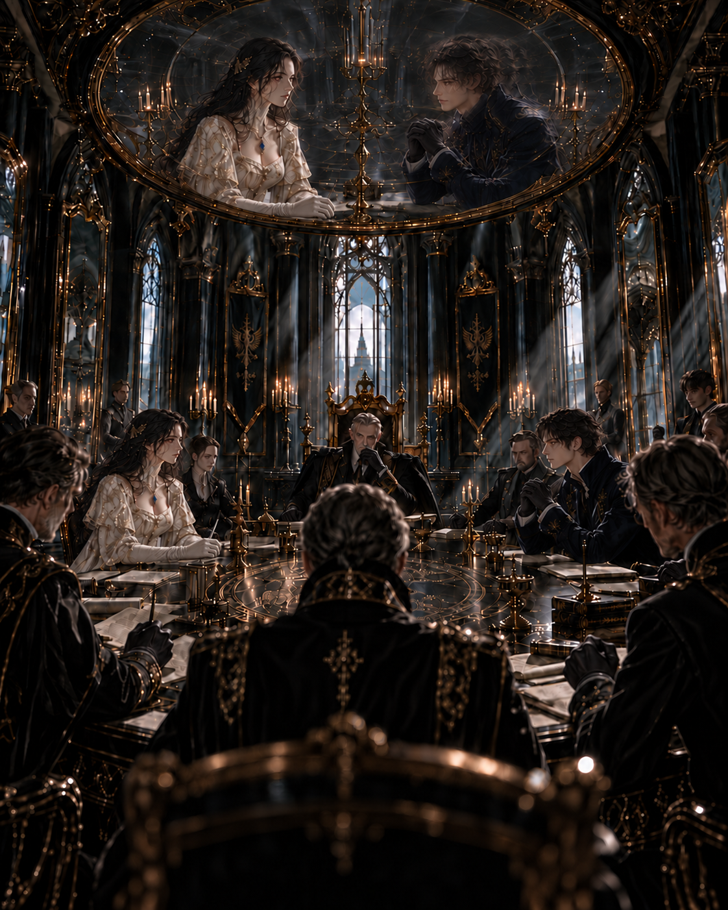

다음 날 아침, 아이리스는 거울 앞에서 표정을 몇 번이나 다시 만들었다.
입술 끝을 올렸다가 내리고, 눈매의 힘을 풀었다가 다시 조였다.
감사합니다.
염려하지 않으셔도 됩니다.
두 표정은 여전히 정확했다.
그러나 그 사이로 전날 밤의 장면이 자꾸 끼어들었다.
홀리스의 손이 박자를 바꾸던 순간.
거울이 시야에서 사라지고, 대신 그의 얼굴이 가까워졌던 순간.
‘전하의 얼굴에는 정답이 너무 많아서요.ʼ
아이리스는 입술을 다물었다.
거울 속 공주의 미소도 사라졌다.
브리나가 뒤에서 목걸이를 들고 기다리고 있었다. 벨벳 위에 놓인 사파이어는 아침 햇빛 아래에서도 차갑게 빛났다.
“준비할까요, 전하?”
아이리스는 곧바로 대답하지 않았다.
목덜미에는 아직 붉은 자국이 남아 있었다. 분을 덧바르면 보이지 않을 정도였다. 회전이 끝났을 때, 홀리스의 시선은 그녀의 얼굴에 닿기 전 잠시 그 자리를 스쳤다.
그가 알아차렸는지 아이리스는 알 수 없었다. 다만 오늘은 그의 시선이 거기서 멈추지 않았으면 했다.
“걸어줘.”
브리나가 사파이어를 들어 올렸다. 차가운 금속이 목을 감쌌다.
잠금쇠가 닫히는 순간 아이리스의 어깨가 아주 미세하게 굳었다. 다 채운 사슬 아래에 브리나의 손가락이 잠시 남아있었다. 아이리스가 자세를 바로잡자 그 손이 떨어졌다.
쇄골 아래로 사파이어가 내려앉았다.
거울 속에서는 완벽했다.
붉은 자국도,
짧아진 호흡도,
목걸이가 닿는 순간 몸이 굳었다는 사실도 보이지 않았다.
아이리스는 입술 끝을 다시 올렸다.
그 얼굴을 확인하고서야 자리에서 일어났다.
오늘 오전에는 북부 자치령의 중앙 편입을 논의하는 왕실 회의가 예정되어 있었다.
홀리스 베인이 궁전에 도착한 이유를 공식적으로 다루는 첫 자리였다.
회의는 서쪽 의정실에서 열렸다.
대전보다 작았지만, 방 안을 둘러싼 거울의 수는 오히려 더 많았다.
벽마다 길고 좁은 거울이 세워져 있었고, 타원형 탁자 위 천장에는 회의석 전체를 내려다보는 대형 거울이 걸려 있었다.
에드먼드 왕이 상석에 앉았다. 아이리스는 왼편에 자리했다.
아이리스의 맞은편에는 홀리스가 있었다.
그의 양옆으로 변경 사절단의 장군과 서기관이 앉았고, 나머지 자리는 중앙의 대신들과 기록관리부 수장 펜이 채웠다.
아이리스가 자리에 앉았을 때 홀리스는 이미 문서를 넘겨보고 있었다.
짙은 남색 제복은 어제보다 조금 더 단순했다. 보석도, 눈에 띄는 가문의 문장도 없었다.
그가 누구인지를 대신 설명해주는 장식은 하나도 보이지 않았다.
홀리스는 종이 위에 적힌 자신의 이름을 잠시 내려다보다 시선을 들었다.
아이리스와 눈이 마주쳤다.
그의 시선이 먼저 사파이어로 내려갔다. 아주 짧은 순간이었다. 입가에는 웃음도, 전날의 가벼운 흥미도 없었다.
아이리스는 먼저 고개를 돌렸다.
손은 탁자 아래에서 드레스 자락을 한 번 눌렀다.
“베인가의 요구를 다시 확인하지.”
에드먼드의 말에 펜이 준비해온 문서를 펼쳤다.
“북부 자치령은 중앙 행정 체계에 편입된 뒤에도 기존의 재판권과 병력 운용권을 유지할 것을 요구하고 있습니다. 주민들의 원형 거울 등록 역시 북부 장부와 중앙 기록의 대조가 끝날 때까지 유예해달라는 입장입니다.”
재무대신의 얼굴에 못마땅한 기색이 떠올랐다.
“요구라기보다 조건에 가깝군요.”
“편입에는 조건이 따르는 법이지요.”
홀리스가 말했다.
“한쪽이 모든 것을 결정하고 다른 쪽이 따르기만 한다면, 굳이 협상이라는 이름을 붙일 필요도 없을 테니까요.”
재무대신이 미간을 좁혔다.
“베인가는 이미 왕국의 보호를 받고 있습니다.”
“그렇습니까?”
홀리스가 문서에서 눈을 들었다.
“지난 삼 년 동안 중앙군이 북부 방어선에 제때 도착한 것은 두 번뿐입니다.”
국방대신이 의자에서 몸을 고쳐 앉았다.
“지형과 기후 때문에 병력을 이동하기 어렵다는 것을 알고 있을 텐데요.”
“그래서 기다리지 않았습니다.”
홀리스가 대답했다.
“지원군이 오지 못한 날에도 방어선은 지켜야 했습니다. 앞으로는 산길이 막혀도 중앙의 명령이 올 때까지 병사를 움직이지 말아야 합니까?”
국방대신은 대답하기에 앞서 북부의 장군을 보았다. 장군은 탁자 위에 펼쳐진 지도에서 겨울이면 끊기는 길 하나를 손끝으로 짚었다. 홀리스는 그가 손을 거둘 때까지 기다렸다.
천장의 거울 속에서 홀리스의 인영이 겹쳤다.
왕의 대신에게 답을 요구하던 서늘한 눈매가 남아있는데, 그 위로 늙은 장군의 손끝을 따르는 차분한 얼굴이 포개졌다.
홀리스는 올려다보지도 않았다.
재무대신이 말할 때도, 국방대신이 목소리를 높일 때도,
그의 시선은 말하고 있는 사람에게 머물렀다.
“방위는 따로 논의하더라도. 주민들의 등록을 더 미룰 이유는 없습니다.”
펜이 말했다.
“왕국 전체가 동일한 기록 체계 안에 들어와야 공정한 보호와 권리를 보장할 수 있습니다.”
홀리스가 서류 한 장을 넘겼다.
“중앙에서 보내온 명부에는 지난겨울에 사망한 사람이 아직 살아 있습니다. 갓 태어난 아이의 이름 옆에는 위험인물의 혈족이라고 적혀 있더군요.”
펜의 손끝이 멈췄다.
홀리스는 그가 직접 읽을 수 있도록 서류를 돌려놓았다.
“불완전한 자료는 정식 등록을 통해 바로잡을 수 있습니다.”
펜이 사망한 사람의 이름 곁에 표시를 했다.
“불완전한 자료로 먼저 사람을 판단한 뒤에 말입니까?”
“기록은 판단이 아니라 사실의 분류입니다.”
홀리스는 잠시 펜을 바라보았다.
“사람보다 먼저 도착한 분류가 그 사람의 사실이 되는 곳도 있나 보군요.”
펜의 표정은 달라지지 않았다.
그러나 장부를 누르고 있던 손에 조금 더 힘이 들어갔다.
“죽은 이의 이름이 아직 명부에 남은 까닭은 확인해 보게. 아이의 이름 곁에 그 말을 적은 근거도 함께.”
에드먼드가 말했다.
법무대신이 입을 열었다.
“중앙의 법은 왕국 전체에 동일하게 적용되어야 합니다. 지역마다 다른 법과 기록 방식을 허용한다면 질서는 오래가지 못합니다.”
“동일한 법이 모든 사람에게 동일하게 작동한다고 믿으십니까?”
홀리스가 물었다.
“적어도 동일한 기준을 제공합니다.”
“눈이 오지 않는 곳에서 만든 기준으로 눈 속을 걷게 하는 것도 동일함이라 부를 수 있겠군요.”
법무대신이 입을 다물었다.
홀리스는 더 밀어붙이지 않았다. 그저 다음 문서를 넘겼다.
아이리스는 천장의 거울을 올려다보았다.
세련된 사절.
불경한 후계자.
충성스러운 지도자.
잠재적인 반역자.
인상들은 여전히 하나로 모이지 않았다.
그제야 아이리스는 알았다.
홀리스가 거울을 기만하고 있는 것이 아니었다.
느긋한 미소도,
한 치의 어긋남 없는 예법도,
경계 어린 침묵도 모두 그에게 속해 있었다.
그 얼굴들 가운데 어느 것도 거짓은 아니었다.
그러나 어느 하나도 홀리스 전체가 아니었다.
그는 거울이 하나의 얼굴을 고를 수 있도록 자신을 정리해주지 않았다.
거울이 무엇이라 부르든, 홀리스는 달라지지 않을 사람처럼 보였다.
아이리스는 평생 하나의 얼굴을 지키기 위해 살아왔다.
그 차이가 가슴 안쪽을 서늘하게 갈랐다.
법무대신이 북부 재판권에 관한 설명을 마친 뒤 아이리스를 바라보았다.
“공주 전하께서는 어떻게 생각하십니까?”
아이리스가 고개를 들었다.
회의장의 시선이 자신에게 모여 있었다.
질문을 놓쳤다는 사실을 들켜서는 안 됐다.
그녀는 탁자 위의 문서를 내려다보았다.
마지막으로 들은 것은 재판권에 관한 논의였다.
준비해온 답이 곧 떠올랐다.
“편입 이후에도 변경의 사정을 완전히 무시할 수는 없을 것입니다.”
아이리스가 말했다.
“그러나 왕국의 법이 지역에 따라 지나치게 다르게 적용된다면, 백성들이 하나의 왕국에 속해 있다는 믿음도 약해질 수 있습니다.”
정확한 대답이었다.
어느 쪽에도 완전히 서지 않으면서 왕실의 질서를 지키는 말.
법무대신은 만족스럽게 고개를 끄덕였다.
에드먼드의 표정도 나쁘지 않았다.
천장의 거울 속 아이리스는 신중하고 공정한 후계자의 얼굴을 하고 있었다.

“그렇다면 전하께서는 하나의 법이 사람들을 하나로 만든다고 생각하십니까?”
홀리스가 물었다.
왕이나 대신에게 돌릴 수 없는 질문이었다. 에드먼드는 제지하지 않았다.
아이리스는 홀리스를 바라보았다.
“공통된 법은 같은 왕국에 속한다는 기준을 만듭니다.”
“기준이 먼저입니까, 소속감이 먼저입니까?”
“둘은 분리될 수 없습니다.”
홀리스가 고개를 아주 조금 기울였다.
“이름을 먼저 준다고 사람이 그 이름 안에 머무는 것은 아니던데요.”
아이리스의 호흡이 잠시 멎었다.
‘이곳에서는 그 이름이 필요하다고 들었습니다.ʼ
어제 대전에서 들은 목소리가 떠올랐다.
홀리스는 북부 사람들에 관해 묻고 있었다. 그런데 조금 전부터 아이리스의 눈에 들어오는 것은 문서 첫머리에 적힌 자신의 이름이었다.
아이리스 애시워스.
그 이름을 쓰는 법을 배우기도 전에, 사람들이 자신을 그 이름으로 불렀다.
준비된 대답은 있었다. 이름은 책임을 부여하고, 책임은 사람을 그에 걸맞은 존재로 만든다고 말하면 됐다. 아이리스는 평생 그 말이 틀렸다고 생각한 적이 없었다.
막상 입을 열자, 그녀의 입에선 다른 말이 나왔다.
“때로는.”
자신의 목소리가 예상보다 낮게 들렸다.
“이름 안에 머무는 동안에야 자신이 어디에 속해 있는지 알 수 있는 사람도 있습니다.”
회의장이 조용해졌다.
틀린 대답은 아니었다.
그러나 왕실이 준비한 문장도 아니었다.
에드먼드의 시선이 아이리스에게 닿았다. 펜의 손이 장부 위에서 멈췄다.
홀리스는 아무 말도 하지 않았다.
회의 내내 얼굴에 남아 있던 느긋함이 잠시 사라졌다.
처음 듣는 목소리를 놓치지 않으려는 사람처럼 보였다.
아이리스는 손끝이 차가워졌다. 이제 그가 무엇을 물을지 알 수 없었다.
“그럴 수도 있겠군요.”
그뿐이었다.
홀리스는 시선을 문서로 돌렸다. 북부의 서기관이 다음 장을 펼쳤고, 국방대신은 아까 장군이 짚었던 산길까지 병력을 보내는 데 며칠이 걸리는지 물었다.
회의는 계속되었다.
세율과 군사권, 행정관의 배치를 차례로 논의하는 동안에도 아이리스는 조금 전 자신이 한 말을 되짚고 있었다.
사파이어 아래에서 자신의 맥박이 빨라지는 것을 느꼈다.
평소라면 숨을 줄이고 자세를 바로잡았을 것이다.
그녀는 시선을 문서로 내렸다. 글자들이 한순간 흐려졌다. 눈을 한 번 감았다가 떴다.
다시 읽을 수 있었다.
회의가 끝날 무렵 에드먼드는 최종 결정을 미뤘다.
“사흘 뒤 다시 논의하지. 그때는 두 장부를 나란히 놓고 보겠네.”
대신들이 자리에서 일어났다. 의자가 밀리고 문서가 정리되는 소리가 방 안을 채웠다.
아이리스도 일어났다.
사파이어가 움직이며 붉어진 피부를 스쳤다. 그녀는 반사적으로 숨을 멈추려 했다.
탁자 가장자리에 손을 짚고, 조이는 드레스 안에서 가능한 만큼 천천히 숨을 들이마셨다. 차가운 금속이 목 아래를 조금 더 세게 눌렀다.
불편했다.
그 단어가 처음으로 다른 이름 없이 떠올랐다.
아이리스는 자신도 모르게 홀리스를 바라보았다. 그는 회의장 출구 앞에서 변경의 서기관과 대화를 나누고 있었다. 서류를 받아 들던 그가 고개를 들었다.
두 사람의 눈이 마주쳤다.
이번에도 홀리스는 웃지 않았다. 아이리스 역시 서둘러 미소 짓지 않았다. 서기관이 문을 열었고, 홀리스는 가볍게 목례한 뒤 그와 함께 나갔다.
아이리스는 탁자에서 손을 떼었다. 입술 끝을 올리고, 눈매의 힘을 풀고, 어깨를 반듯하게 세웠다.
감사합니다.
염려하지 않으셔도 됩니다.
두 표정은 여전히 정확했다.
다만 무엇인가가 안에서 어긋나기 시작했다.
정확하다는 것과 진실하다는 것은 같은 말이 아니었다.